Biography
I am a Senior Scientist in the Distributed and Interactive Systems (DIS) group at Centrum Wiskunde & Informatica (CWI), the Dutch national research institute for mathematics and computer science. My main research line is on behavioural analysis for immersive systems: how people move, look, speak and decide in virtual environments, alone and together—and how that behaviour can be measured and used to design better systems. My work sits at the crossroads of machine learning, data analysis and multimedia systems. I also serve as Director of Conferences of ACM SIGMM and chair the ACM Multimedia steering committee.
I received my Laurea Triennale and Magistrale in Electronics and Telecommunications Engineering for Energy from the University of Bologna 🇮🇹 – Campus of Cesena in 2013 and 2016 (Advisor Prof. Marco Chiani). From September 2015 to March 2016, I was a visiting student at Kingston University, London 🇬🇧. In May 2017, I joined the LASP group at UCL 🇬🇧 under the supervision of Dr Laura Toni.
My PhD thesis "Understanding user interactivity for the next-generation immersive communication: design, optimisation, and behavioural analysis" received the Fabrizio Lombardi Prize 2022 and the SIGMM Award for Outstanding PhD Thesis 2023. In 2022, I joined the DIS group at CWI, Amsterdam 🇳🇱, initially through the ERCIM "Alain Bensoussan" Fellowship.
Research Experience
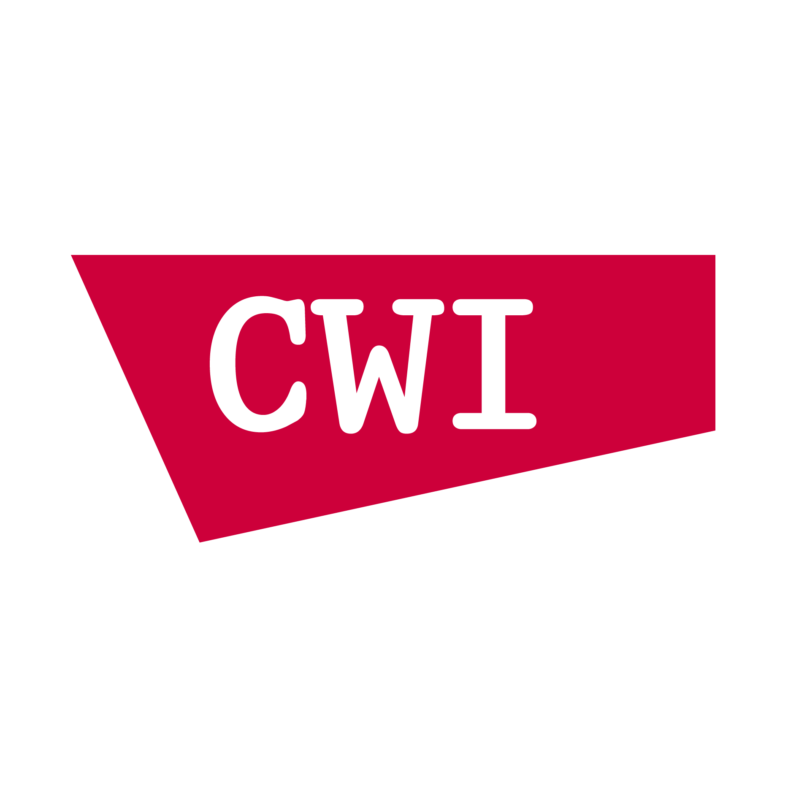
Senior Scientist · 2024–Present
Centrum Wiskunde & Informatica (CWI) · Amsterdam, The Netherlands
Leading the research line on behavioural analysis for immersive systems. Building Python pipelines for multimodal behavioural data from multi-user VR studies and developing behavioural metrics for user modelling and system optimisation. Lead CWI's activities in INDUX-R (scene orchestration, resource scheduling, real-time synchronisation); task-level lead in TRANSMIXR. Co-supervising a PhD student on volumetric telepresence. Distributed and Interactive Systems (DIS) group.
Postdoctoral Researcher · 2022–2024
Centrum Wiskunde & Informatica (CWI) · Amsterdam, The Netherlands
Predictive models for user behaviour in 6-DoF immersive media, and immersive communication frameworks for high-fidelity Social VR (TRANSMIXR, SPIRIT). Former ERCIM Fellow. Distributed and Interactive Systems (DIS) group.
Research Internship · 2020–2021
Centrum Wiskunde & Informatica (CWI) · Amsterdam, The Netherlands
7-month internship on user behavioural analysis in immersive systems (3-DoF to 6-DoF). Distributed and Interactive Systems (DIS) group.
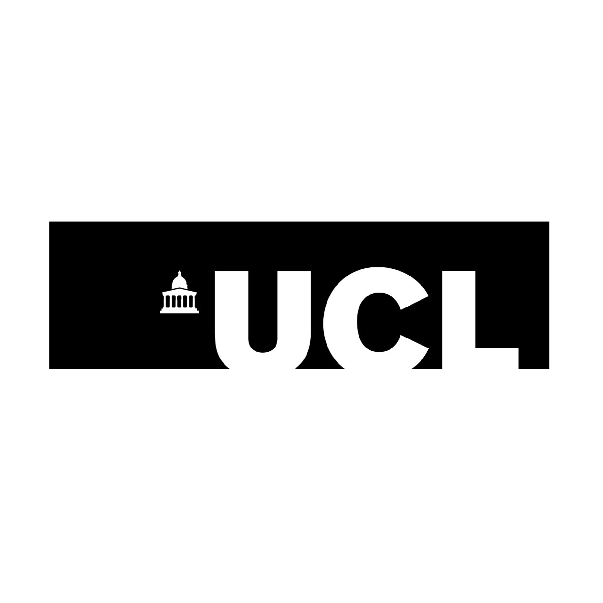
Research Internship · 2016–2017
University College London (UCL) · London, United Kingdom
5-month internship on interactive communication. Department of Electronic & Electrical Engineering, LASP group.
Visiting Researcher · 2015–2016
Kingston University · London, United Kingdom
Visiting research for master’s thesis. WMN (Wireless Multimedia Networking) research group.
Education
PhD · 2017–2022
University College London (UCL) · London, United Kingdom
PhD in Electronic and Electrical Engineering on immersive communication.
Thesis: Understanding user interactivity for the next-generation immersive communication
Advisor: Dr Laura Toni
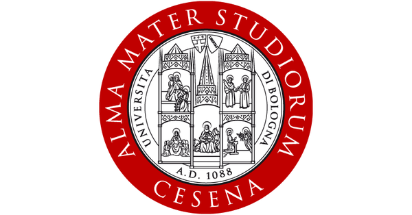
MSc · 2013–2016
University of Bologna (UNIBO) – Campus of Cesena · Italy
MSc in Electronics and Telecommunication Engineering for Energy.
Thesis: Content Characterisation of 3D Videos
Advisors: Prof Marco Chiani (UNIBO); Prof Maria Martini (Kingston University, UK)
Invited Talks & Keynotes
- Keynote "From Individual Immersion to Shared Experiences in Social XR" — ACM SIGMM Europe Chapter Symposium, co-located with ACM MM 2025, Dublin, Ireland.
- Invited talk "Understanding User Behaviour to Unlock the Potential of XR" — 2023 SIGMM Award for Outstanding PhD Thesis, ACM MM, Ottawa, Canada (November 2023).
- Panel "Multimodal Large Foundation Models" — ACM MM, Ottawa, Canada (November 2023).
- Invited talk "Cross Media Cafè: Spatial Computing" — Cross Media Cafè, Hilversum, The Netherlands (October 2023). ▶ Video
- Invited talk "Exploring User Interactivity to Unlock the Potential of Social XR" — Department of Electronic & Electrical Engineering, UCL, London, UK (July 2023).
- Invited talk "Social XR: Volumetric Video for Remote Communication and Collaboration" — National XR Days, Delft, The Netherlands (July 2023).
- Invited talk "Understanding User Interactivity for the Next-Generation Immersive Communication" — NTNU, Trondheim, Norway (March 2023).
- Invited talk "Adaptive Streaming for Immersive Communications" — 57th FITCE Congress, MediaCityUK, Salford, UK (September 2018). ▶ Video
Service
Leadership & Community
- Director of Conferences, ACM SIGMM Executive Committee (since November 2024)
- Steering Committee Chair of ACM Multimedia (since November 2024)
- Member of the SIGMM Strike Team on Harmonization and Spread (2024–2026)
- Information Director for ACM SIGMM Records (since 2021)
- Co-organiser of the Spring School on Social XR (since 2023) at CWI, Amsterdam — an official ACM Europe Seasonal School since 2025
Organising Committee
- General Co-Chair of ACM IMX 2027
- Doctoral Symposium Co-Chair at ACM MMSys 2027
- Program Co-Chair at ACM IMX 2026
- Panel Co-Chair at ACM Multimedia 2026
- Program Co-Chair at ACM MMSys 2025
- Demo Co-Chair at QoMEX 2025
- Work-in-Progress Co-Chair at ACM IMX 2025
- Workshop Chair of MMVE 2024 (co-located with ACM MMSys 2024)
- Special Session Chair at QoMEX 2024
- Social Media Chair at ACM MMSys 2020 · 2021 · 2022
Editorial & Area Chairing
- Guest Editor, Special Issue on MMSys 2025 — ACM TOMM (in progress)
- Area Chair, ACM Multimedia (since 2024)
- Associate Chair, ACM IMX (since 2024)
Reviewing & Technical Programme Committees
- Journals: ACM TOMM · IEEE Transactions on Multimedia · IEEE JSTSP
- Conferences: ACM MM (since 2022) · ACM MMSys (since 2023) · QoMEX (since 2023) · IEEE AIxVR (2024) · IEEE ICME (2020–2022)
- Workshops: MMVE (since 2021) · Meet4MM (2024) · IXR (2023)
Honors & Awards
- 2025 · Best Paper Award, QoMEX 2025 — "From Individual QoE to Shared Mental Models: A Novel Evaluation Paradigm for Collaborative XR"
- 2023 · SIGMM Award for Outstanding PhD Thesis in Multimedia Computing, Communications and Applications
- 2022 · Fabrizio Lombardi Prize for the best EEE PhD thesis, University College London (UCL)
- 2022 · ERCIM Alain Bensoussan Fellowship
- 2021 · Nicholas Georganas ACM TOMM Best Paper Award
- 2021 · Royal Society Mobility Grant between UCL, London and CWI, Amsterdam
- 2019 · SIGMM Travel Grant to ACM MMSys 2019
- 2018 · SIGMM Travel Grant to ACM MMSys 2018
- 2018 · Cisco Prize for Best Student Poster, Barlow Lecture at EEE Department, UCL
Gallery
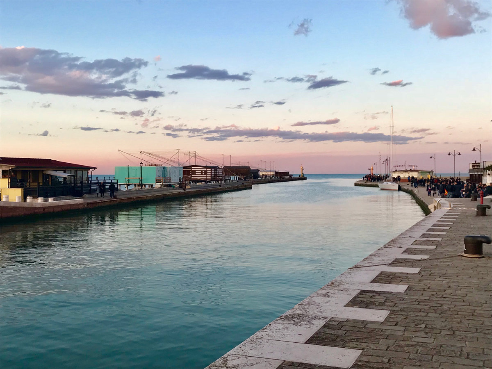
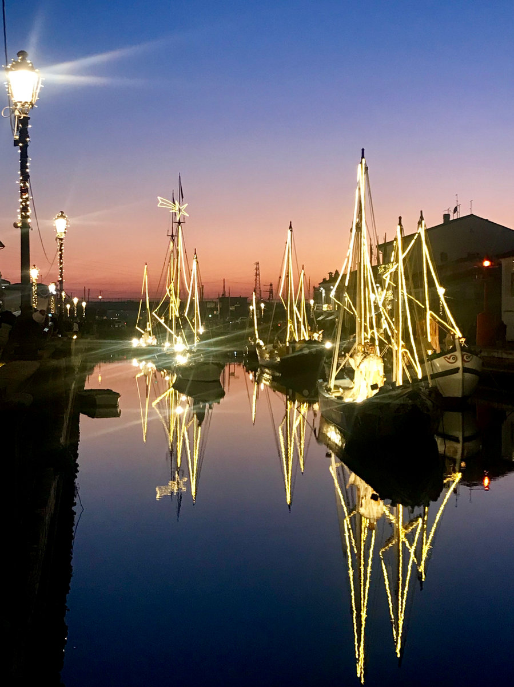
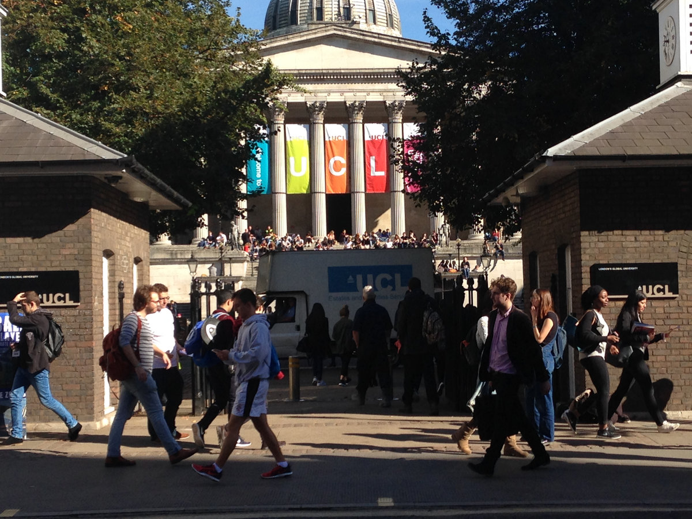
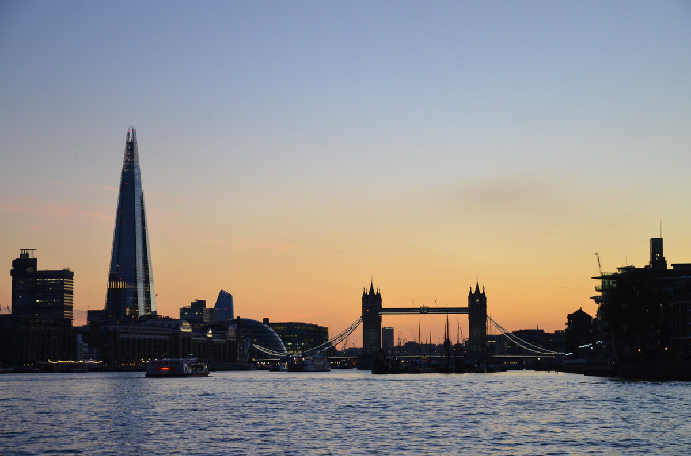
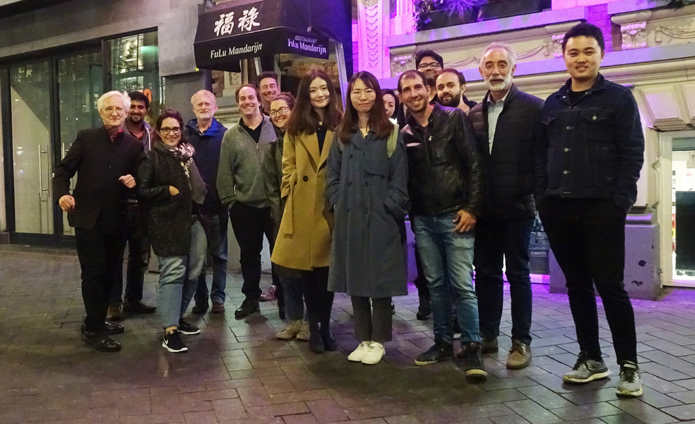
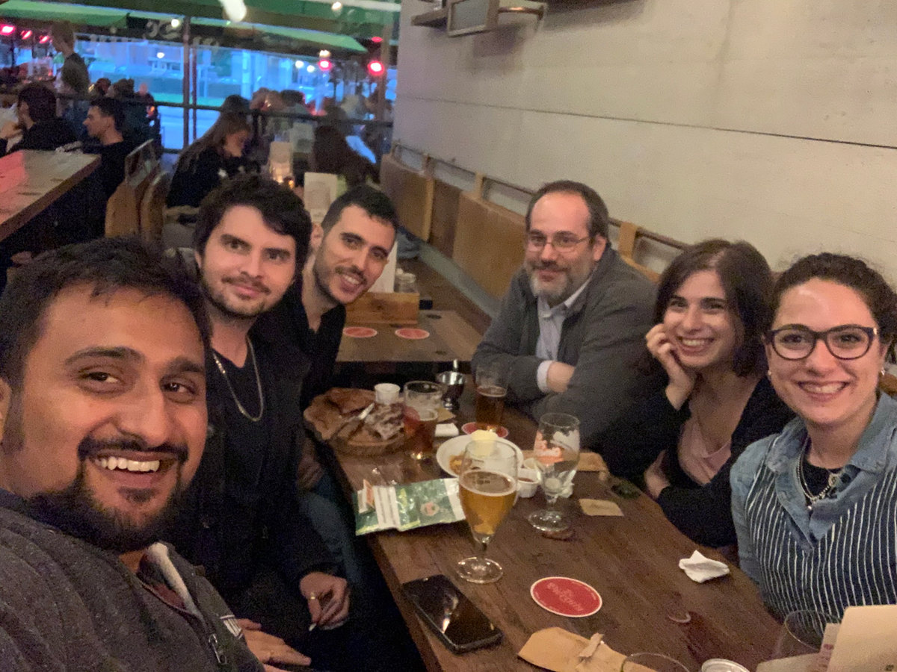
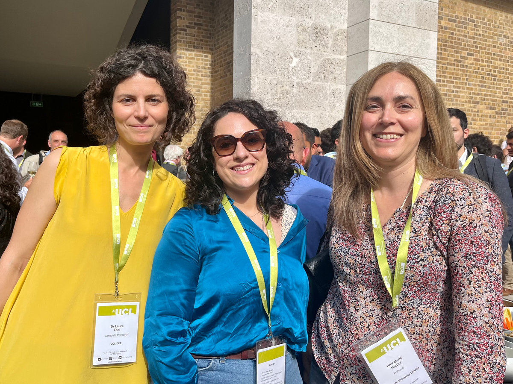
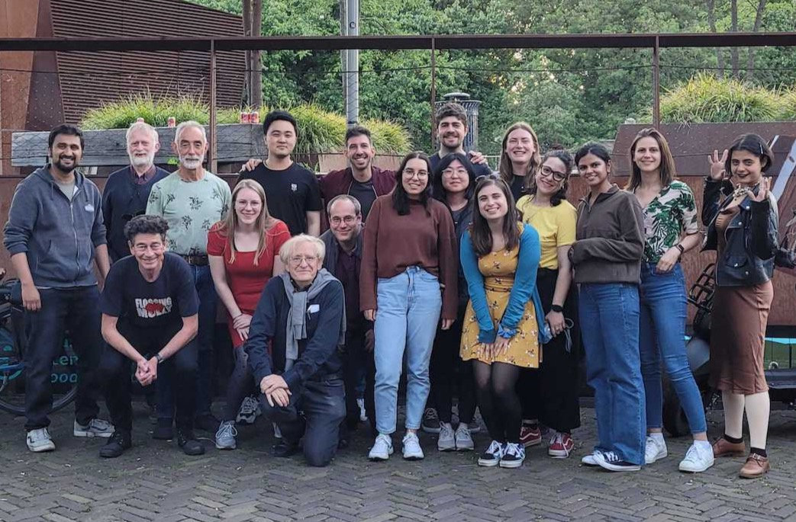
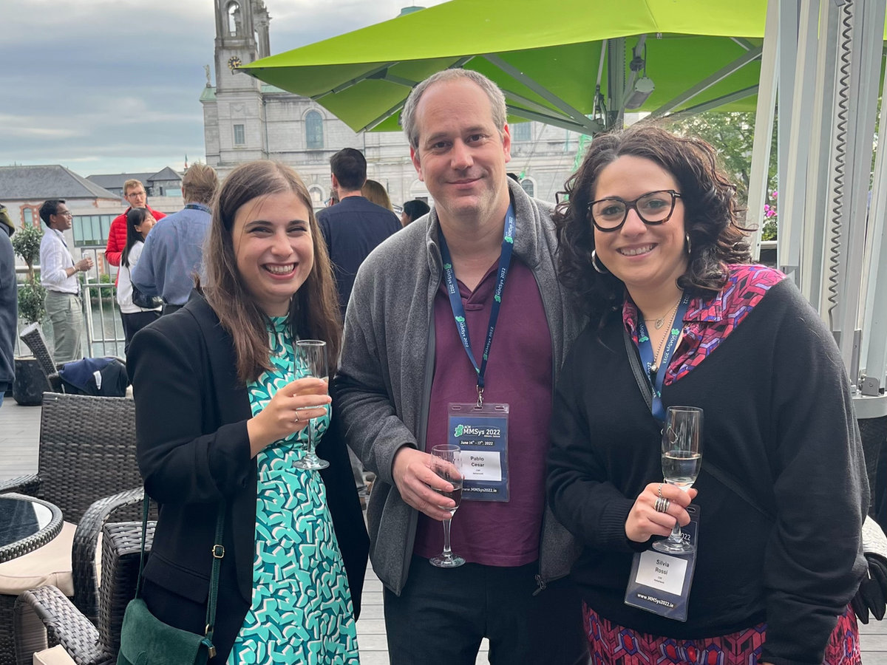